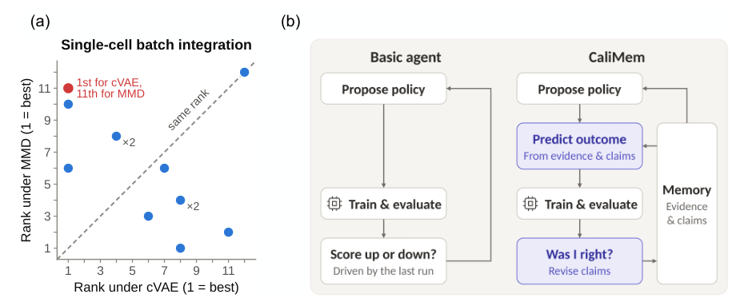
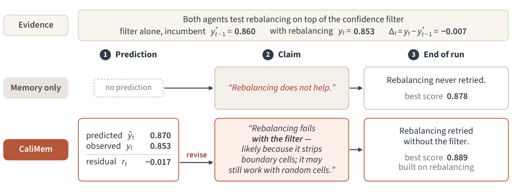
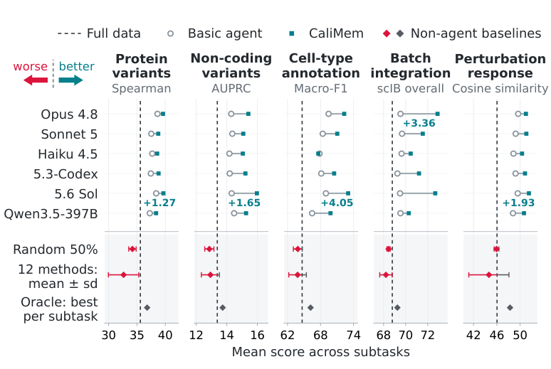
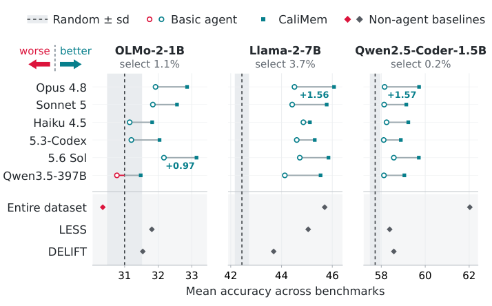
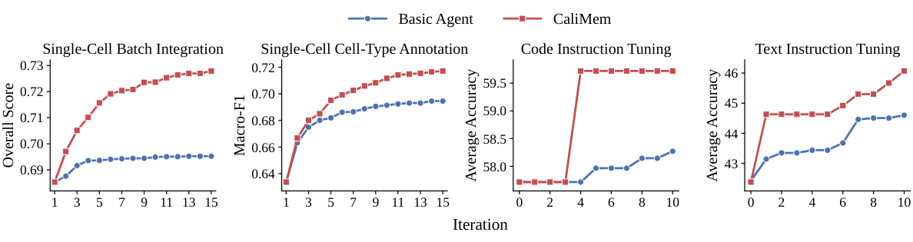
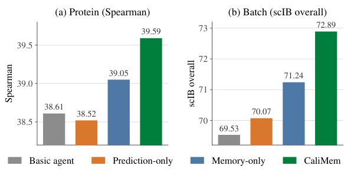

CaliMem：让智能体先预测实验结果，再用偏差修正经验记忆
论文原文 ↗论文：CaliMem: Search-Efficient Data Agent via Calibrated Memory
作者：Hanze Li、Athan Z. Li、Feiyang Kang、Jiachen T. Wang、Yuhan Chen、Ruishan Liu、Ruoxi Jia
来源：arXiv，2026-10-25；官方页面 · 公开代码 ·
实验记住了，为什么下一步仍会选错
训练数据如何选择，会影响模型学到什么。一个看起来合理的数据处理规则，例如平衡类别、剔除低质量样本或尽量覆盖表示空间，换一个下游模型后可能由有益变为有害。作者在覆盖生物学方向的 55 个“数据集—模型”任务上比较标准规则，发现固定配方很难普遍适用。例如，同一条处理规则在一个批次整合模型中排名第一，在另一个模型中却排到第十一。
让编码智能体自动试配方，可以根据真实模型的响应调整数据选择。但是，智能体也会把一次实验的结果写成过强的经验：“这个办法没用”“这个参数已经最优”。经验一旦留在长期记忆里，后面就会持续影响实验选择，甚至让整个方向提前退出搜索。
CaliMem 针对的正是这个问题。每轮执行前，智能体必须先预测这条数据选择策略会得到多少分，并写清预测依据；执行后，再根据预测与实际结果的差别，修改记忆中的解释。这样，长期记忆除了记录发生过什么，还不断修订“在什么条件下可能有效”。

图1：数据处理规则的效果随下游模型改变，以及 CaliMem 的预测—执行—记忆更新循环。
这套循环的输入、动作和反馈是什么
以生物学任务为例，智能体拿到一个候选训练数据池、固定的下游模型与训练流程，以及“每次只能保留一半数据”的数量预算。初始实验使用同一个随机子集，之后每轮提出新的选择程序：决定保留哪些样本、各类数据分多少名额，或如何组合过滤与排序。程序生成满足预算的子集后，由固定流程训练下游模型，再返回评价分数。生物学实验共进行 15 轮，语言模型后训练实验进行 10 轮；最终采用其中表现最好的策略。
智能体修改的是数据策略，下游模型的训练配方保持固定。语言模型后训练中，每轮都从相同基础检查点重新微调；单细胞标注和批次整合实验中，CaliMem 的动作还包括选择基因特征面板，Basic 协议使用固定面板。不同任务的动作范围因此由各自实验接口决定。
持续记忆包含两类内容。证据是已经运行的策略、观测分数、数据池和模型的事实；判断是智能体对这些证据的解释，例如某种过滤为何有用、两个步骤如何相互影响、接下来值得检查哪个方向。智能体每次决策前读取完整记忆，得到结果后更新它。这里的经验学习发生在文字记忆里，不需要更新负责决策的语言模型权重。
在此基础上，CaliMem 在每轮插入三个连续动作：
- 提交候选策略时，先给出预期分数，关联支撑它的证据与判断，并说明什么样的结果会挑战这些判断。
- 执行策略，取得实际分数，同时计算它比当前最好结果提高多少，以及它与先前预测相差多少。
- 根据这两种反馈修改经验：是否保留策略由实际提升决定；如何重写理解则要结合预测误差和具体改动。
这两个数回答不同问题。例如，一个策略确实超过了当前最好结果，却远低于智能体原来的预测。策略可以保留，但推动它的解释仍然需要修正；反过来，一次失败也可以帮助找到规则成立的具体条件。
一个失败实验，怎样从“关掉方向”变成“缩小条件”
论文图2给出了胰腺细胞类型标注的例子。模型为 SVM，评价指标为 macro-F1，即先分别计算各细胞类型的 F1，再平均，使小类别也能影响总分。只按分类置信度筛选训练细胞时得到 0.860；在此基础上再平衡各类别数量，分数降到 0.853。
只有记忆的智能体把它记成“类别平衡没有帮助”，后续不再尝试，最终最好分数是 0.878。CaliMem 事前预测是 0.870，实际却得到 0.853，差值为 −0.017。智能体因此重新考虑的，是“为什么我以为它会有用，而这次没有”。它把判断改写为：类别平衡在当前置信度过滤之后失败，可能是这一组合削去了有价值的边界细胞；如果从随机细胞出发，平衡仍可能有效。随后它确实重新尝试了后一种组合，得到建立在类别平衡之上的 0.889。

图2：同一次平衡操作失败后，两种记忆如何引导后续搜索。
这里保留下来的经验有明确条件：“在这条过滤策略之后的平衡失败”。这种写法让尚未测试的组合继续留在搜索空间里。预测误差提供了一个需要解释的具体矛盾，促使智能体重新检查当初依赖的判断，而不只是追加一条实验日志。
找到的策略确实提高了数据利用率
生物学实验覆盖蛋白质变体效应、非编码变体效应、细胞类型标注、批次整合和扰动响应预测。不同任务分别使用序列、基因组和单细胞数据。各方法在同一任务内都保留相同数量的样本，并通过指定下游模型评价。
在六种语言模型驱动的智能体与五类任务构成的 30 组汇总比较中，CaliMem 有 29 组超过 Basic 智能体。以 Opus 4.8 为例，蛋白质任务的 Spearman 相关系数由 38.61 提高到 39.59，细胞标注 macro-F1 从 69.46 到 72.30，批次整合综合分从 69.53 到 72.89，数值均按 0—100 展示。使用一半训练数据的 CaliMem 也在这些汇总结果中超过全数据训练；最大相对提升 19.4% 出现在 GPT-5.6 Sol 驱动的非编码变体任务中，AUPRC 从全数据的 13.38 到 15.97。

图3：五类生物学任务中，固定配方、Basic 智能体和 CaliMem 的比较。
后训练实验进一步固定每轮挑选一万条样本，分别对应 OLMo-2-1B 数据池的 1.1%、Llama-2-7B 的 3.7% 和代码模型 Qwen2.5-Coder-1.5B 的 0.2%。CaliMem 在 18 组对应比较中全部超过 Basic，并在 17 组中达到或超过已有数据选择方法 LESS。两个通用指令微调设置中，最强的小子集还超过了全数据训练。

图4：固定一万条训练样本时的语言模型后训练结果。
作者还检查了搜索过程。图5展示的四种设置中，CaliMem 在前五轮内就达到 Basic 用完整预算得到的最终分数，并继续获得更高结果。它带来的收益包括更少的试验轮数，而不仅是最后分数更高。

图5：随着实验轮数增加，两种智能体迄今找到的最好分数。
“先预测”和“持续记忆”各自是否就够了？消融实验中，仅加记忆，蛋白质分数由 38.61 到 39.05，批次整合由 69.53 到 71.24；再加入预测校准，分别到 39.59 和 72.89。只要求预测、却不持续更新经验时，蛋白质结果为 38.52，批次整合为 70.07。作者据此认为，预测的主要价值是把偏差写回后续仍会使用的记忆，使认识修订能够影响未来决策。

图6：单独使用记忆、单独预测及完整 CaliMem 的消融比较。
对科研智能体有什么启发
CaliMem 新增的是一种经验更新方式：从“做了什么、得了多少分”继续走到“原来为什么预计会成功、观测迫使哪条判断改变”。具体的蛋白质或单细胞规则随任务改变，但这个决策结构围绕的是反复执行实验、解释结果和选择下一步，因而值得科研智能体系统借鉴。
它也展示了为什么经验文件越长不等于经验越好。一次实验带来的有效知识常常是有条件的；把条件保留下来，才能在组合策略、改变数据选择或调整研究路线时继续利用这些知识，而不会被过早写死的结论限制搜索。
原始摘要完整中文翻译
数据整理是机器学习中的一项首要设计选择，但为下游模型和任务定制训练数据，仍然需要付出高昂的人力、专业知识和计算成本。因此，数据集通常通过固定流程处理，然后在不同应用中重复使用。我们表明，这种假设并不稳固：在覆盖生物学领域的 55 个数据集—模型任务上，同一个数据整理配方可能帮助一个模型，却损害另一个模型。有效的数据整理必须适应下游设置，这促使我们对数据配方开展自动化搜索。我们首先构建一个在部署时搜索数据整理策略的智能体系统，通过测试时数据整理提高数据效用。尽管它能够改善性能，但搜索主要由近期反馈驱动，仍然局限于局部。加入持续记忆能够帮助智能体跨轮次保留证据，同时揭示一个更深层的问题：它形成的判断会超出实际观测所支持的条件，有时仅在一次不成功的尝试后就放弃整种策略。为解决这一问题，我们提出 CaliMem，一种具有校准记忆的智能体循环，要求智能体在执行每项候选策略前先预测其结果。比较预测与实际观测，为智能体检验其提案背后的判断提供了现实反馈。它利用预测误差保留有支撑的判断、修正错误判断，并明确结论成立的条件。这使智能体的认识可以接受检验，减少过度泛化，并支持更有效的长程探索。在生物学和语言模型后训练任务中，CaliMem 持续优于固定数据整理基线与已发表方法，相比全数据训练的提升最高达到 19.4%。代码已开源。